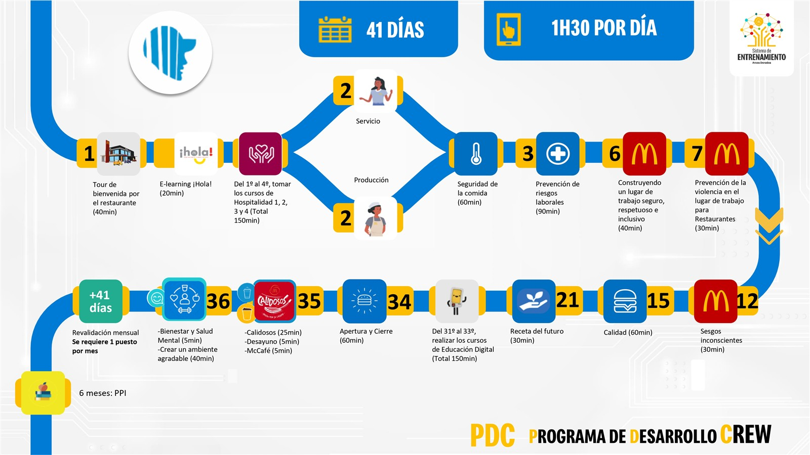
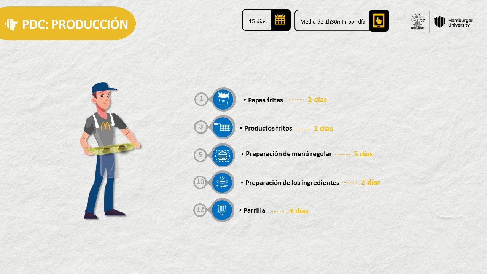
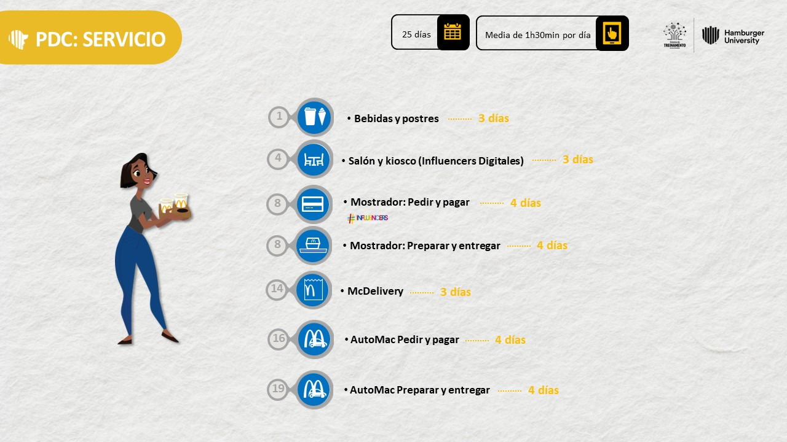
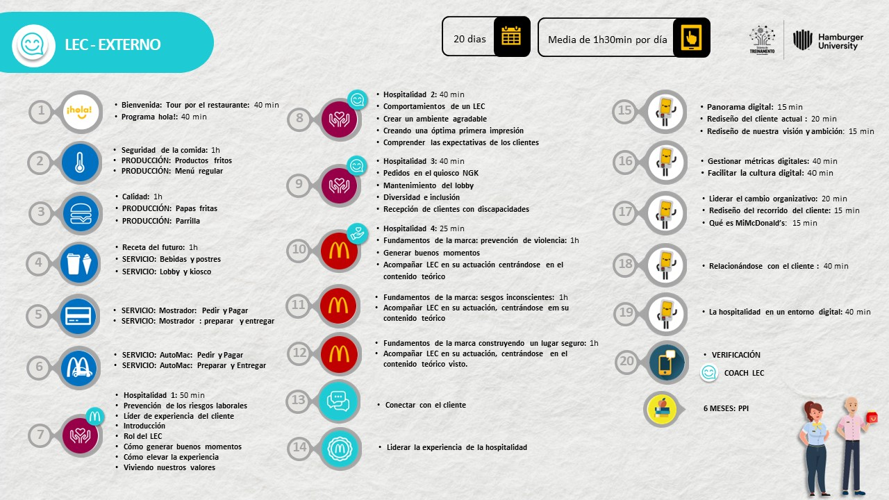
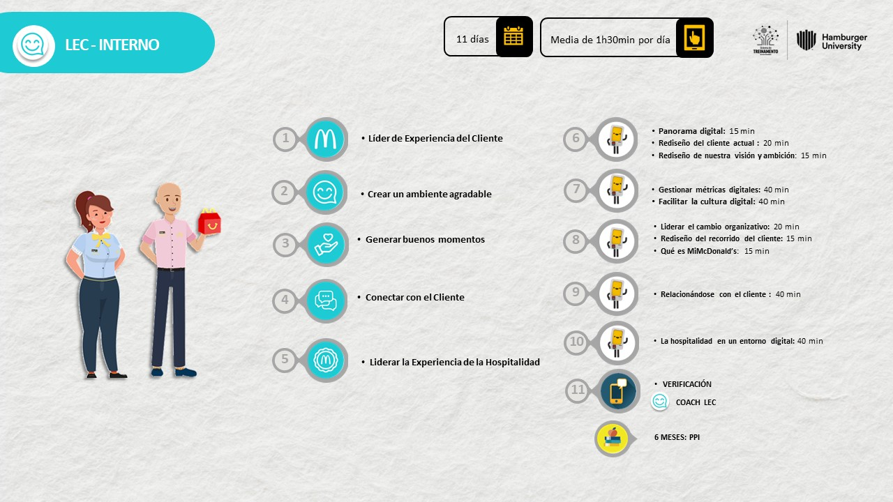

Generosidad
Compartir con los demás nuestro tiempo, nuestra atención, nuestra experiencia y nuestros saberes.
Colocar a nuestra gente en el centro de todo lo que hacemos.
Por nuestro Propósito: hacer de cada día una oportunidad para alimentar personas y construir sueños.
Por nuestros Principios: Generosidad, Humildad, Vocación de Servicio, Inclusión y Agilidad.
Por nuestra Declaración de Identidad: LO HACEMOS SIMPLE, JUNTOS Y CON PASIÓN.
Hacer de cada día una oportunidad para alimentar personas y construir sueños.
Compartir con los demás nuestro tiempo, nuestra atención, nuestra experiencia y nuestros saberes.
Conocer y aceptar nuestras virtudes y nuestras debilidades. Aceptar tanto los éxitos como los fracasos. Reconocer el error como parte del aprendizaje. Ver los desafíos como parte del crecimiento.
Interés por las personas por sobre todas las cosas. Brindarse a los demás para ayudarles en sus necesidades y para hacerlos sentirse felices. Buscar la cercanía hacia todas las personas sin importar nuestra posición en la organización. Ser transparentes y responsables en nuestras acciones.
Actuamos con integridad y transparencia. Cuidamos el impacto que generamos en las comunidades. Construimos confianza en todas las relaciones.
Generamos resultados y aprendemos juntos. Nos adaptamos a los cambios. Lideramos los cambios.
Lo hacemos simple, juntos y con pasión.
Nos gusta sorprenderte
Nos pasan las mismas cosas
Somos cálidos
Creamos tendencia
Somos expertos
Creamos oportunidades
Recibir a cada persona con una sonrisa genuina, contacto visual y un saludo cálido que transmita que su visita importa.
Mantener cada espacio impecable: mesas, pisos, baños y áreas de atención siempre limpios y listos para el cliente.
Generar detalles inolvidables —un cumplido, un juego, una ayuda inesperada— que conviertan una visita corriente en un recuerdo especial.
El gerente lidera con el ejemplo: recorre la sala, conversa con los clientes y asegura que cada experiencia refleje nuestros estándares.
Tomar y entregar cada pedido de forma precisa, confirmando detalles y resolviendo cualquier error con rapidez y empatía.
Nos enfocamos en el mínimo detalle por más pequeño que sea.
No solamente cumplimos las expectativas, sino que las superamos agregándoles experiencia.
No solamente servimos comida rápida y de calidad, sino que lo hacemos con comodidad.
PROGRAMAS DE DESARROLLO



Pulsa un día para ver su explicación completa.
El primer día se le debe realizar el Tour por el restaurante, tiene una duración de 40 min. Ese mismo día el crew debe realizar el curso de ¡Hola! (20 min), al igual que los 4 cursos de hospitalidad (150 min en total).
Debe comenzar en algunas de las estaciones, ya sea por producción o servicio, y debe hacer de la mano el curso de Seguridad de la Comida (60 min).
Debe realizar el curso de Prevención de Riesgos Laborales (90 min).
Debe realizar el curso Construyendo un lugar de trabajo seguro, respetuoso e inclusivo (40 min).
Debe realizar el curso de Prevención de la violencia en el lugar de trabajo para restaurantes (30 min).
Debe realizar el curso de Sesgos Inconscientes (30 min).
Debe realizar el curso de Calidad (60 min).
Debe realizar el curso de Receta del Futuro (30 min).
Debe realizar los cursos de Educación Digital (150 min en total).
Debe realizar los cursos de Apertura y Cierre (60 min).
Debe realizar los cursos de Calidosos (25 min), Desayuno (5 min) y McCafé (5 min).
Crear un ambiente agradable (40 min).
Bienestar y salud mental (5 min)
Se le realiza entrenamiento dos veces por semana por las estaciones, siguiendo el camino de formación.
PROGRAMAS DE DESARROLLO


Pulsa un día para ver su explicación completa.
Los Líderes de Experiencia del Cliente son los embajadores de la hospitalidad. Tú preparas el escenario para ayudar a nuestros clientes a sentirse bienvenidos, seguros, atendidos y valorados en todo momento.
¿Sabías que los Líderes de Experiencia tienen 3 roles clave en el restaurante?
Busca incrementar el ticket medio, las transacciones y/o la venta del local a corto y largo plazo.
Es el conjunto de percepciones, emociones e interacciones que un cliente tiene desde que ingresa al restaurante hasta que se va.
Es la creación de momentos especiales, cómodos y divertidos para las familias con niños, asegurando que tanto padres como hijos disfruten de una visita memorable.
Aquí puedes observar todo lo que debes saber sobre la estación de papas fritas: almacenamiento y vida útil, cocción y armado, salado y servicio, y cuidado del aceite y la freidora.
| Ubicación | Condición | Tiempo |
|---|---|---|
| Cava | Temperatura de 0 °F a -10 °F. | Vida primaria: 365 días (un año). |
| Neverita de pared | Separarlas de los productos fritos, en rendijas diferentes. | Vida secundaria: 2 horas. Luego de esas dos horas se deben desechar. |
Tenemos 3 tipos de estuches: regulares, medianos y grandes.
| Estuche | Peso |
|---|---|
| Regular | Unos 70 g. |
| Mediano | Unos 100 g. |
| Grande | Unos 140 g. |
| Tipo de vida | Duración |
|---|---|
| Vida primaria | 365 días. |
| Vida secundaria (en la freidora) | 14 días. |
Los aceites se deben espumar cada 30 minutos o cuando sea necesario.
Aquí puedes observar todo lo que debes saber sobre la estación de productos fritos: almacenamiento y vida útil, bajada y cocción, retención en el UHC, tandas y cuidado del aceite y la freidora.
| Producto | Vida primaria (cava) | Vida secundaria (neverita) |
|---|---|---|
| Pollos | 120 días. | 2 horas. |
| Nuggets | 120 días. | 2 horas. |
| Crispys | 170 días. | 2 horas. |
Para bajar los productos crudos hay una bandeja específica y cestas específicas para cada producto, al igual que las tinas de la freidora.
| Producto | Tiempo de cocción |
|---|---|
| Pollos | 3:30. |
| Nuggets | 3:30. |
| Pollo crispy | 6:55. |
| Producto | Duración |
|---|---|
| Pollos | 20 min. |
| Nuggets | 20 min. |
| Crispys | 40 min. |
| Producto | Tanda completa | Tanda máxima |
|---|---|---|
| Pollos | 4 unidades. | 6 unidades. |
| Nuggets | 10 unidades. | 24 unidades. |
| Crispys | 2 unidades. | 4 unidades. |
| Tipo de vida | Duración |
|---|---|
| Vida primaria | 365 días. |
| Vida secundaria (en la freidora) | 14 días. |
Los aceites se deben espumar cada 30 minutos o cuando sea necesario.
Aquí puedes observar todo lo que debes saber sobre la estación de Preparación Menú Regular: higiene, recetas paso a paso y estándares de envoltorio.
Las recetas se arman de abajo hacia arriba: se comienza con la base del pan y se termina con la corona. Respeta siempre la cantidad de cada ingrediente indicada en la receta.
Preparación de manos: Frótese las manos con jabón germicida durante 20 segundos, lávese entre los dedos y alrededor de las uñas hasta llegar a los codos. Luego enjuágueselas muy bien con agua. Séquese las manos con el secador de manos y aplíquese gel germicida.
Limpieza e higiene personal es importante:
Para asegurar la correcta identificación del producto, este debe envolverse utilizando el lado verde del envoltorio genérico Verde-Azul.
Para estandarizar la presentación, estos sándwiches dejan de entregarse en Clamshell y pasan a utilizar envoltorio con sticker de "especialmente para ti".
Aquí puedes observar todo lo que debes saber sobre la estación de Preparación de Ingredientes: tiempos de vida primaria y secundaria de cada producto.
La vida primaria es el tiempo que el producto dura en su empaque original y condiciones de almacenamiento. La vida secundaria es el tiempo que dura una vez abierto, preparado o llevado a la estación de trabajo. Al vencer cualquiera de los dos tiempos, el producto se desecha.
Aquí puedes observar todo lo que debes saber sobre la estación de Parrilla: higiene, calidad de las carnes, cocción, sazonado, limpieza del equipo, tiempos de retención en el UHC y seguridad.
La Regla de Oro de la parrilla es simple: si no está bien, no se sirve. Antes de empezar verifica que haya carne suficiente, en buen estado y dentro de su vida útil secundaria.
Apariencia personal
Lavado de manos
Lavarse las manos y los antebrazos con jabón germicida durante 20 segundos y colocarse gel antibacterial antes de empezar a trabajar, después de realizar actividades de limpieza o según lo indique el sistema.
Uso de mascarilla
Es obligatorio el uso de tapabocas en el área de la cocina.
Guantes azules (parrilla)
Guantes transparentes
Carnes congeladas
Carnes congeladas con problemas de temperatura
Carnes cocidas
Preparación previa
Verificar que haya carne suficiente, en buen estado (sin signos de descongelación o deshidratación) y dentro del período de vida útil secundario.
Tiempos de retirada óptimos
Uso de teflones
Se rotan de lado diariamente según el código de color del mercado:
Almacenamiento en UHC
Procedimiento
Proporción y vida útil secundaria
Limpieza después de cada cocinado
Manejo vertical
Las bandejas están alineadas verticalmente por producto. Un espacio vacío indica que se debe activar un nuevo producto según la tabla de niveles. Si se requiere disminuir producción, se coloca una bandeja limpia de forma invertida.
Tiempos de retención en UHC
Riesgos principales
Normas clave
Aquí puedes observar todo lo que debes saber sobre la estación de Bebidas y Postres: máquina de helado (HT) y temperaturas, pesos y proporciones de los postres, bebidas frías y refrescos, almacenamiento y vida útil.
El helado se sirve por vueltas: cada 1 oz de helado equivale a 1 vuelta. La porción estándar de topping es de 1 oz
Cada 1 oz de helado equivale a 1 vuelta. La porción estándar de topping es siempre de 1 oz,
| Producto | Composición y preparación | Peso / medida final |
|---|---|---|
| Barquilla (cono) | 2 vueltas y punta (2½ oz) de helado. | 2.5 a 3 oz / 5.8 cm. |
| Sundae | 4 oz de helado + 1 oz de topping. | 5 oz |
| McFlurry sencillo | 5 oz de helado + 1 oz de topping + 1 oz de crocante. | 7 oz. |
| Tamaño de vaso | Porción de jugo de naranja |
|---|---|
| Pequeña | 355 ml (12 fl oz) |
| Mediana | 473 ml (16 fl oz) |
| Grande | 621 ml (21 fl oz) |
| Insumo / producto | Vida primaria | Vida secundaria | Tiempo terciario/Temperaturas |
|---|---|---|---|
| Mezcla de mantecado | 365 días. | En uso/temperado en walking: 3 días para estar lista, 4 días para estar waste. | En HT: 14 días. |
| Conos regulares | 150 días. | 90 días. | 12 horas en conera |
| Conos de chocolate | 150 días. | 60 días. | 12 horas en conera |
| Oreo | 180 días. | 12 horas (todos los crocantes). | — |
| Pirulin | 180 días. | 12 horas (todos los crocantes). | — |
| M&M | 365 días. | En toppinera: 365 días. | — |
| Topping de chocolate | 180 días. | En toppinera: 7 días. | — |
| Topping de caramelo | 6 meses (180 días). | En toppinera: 7 días. | En depósito (abierto): 30 días. |
| Topping de Fresa | 180 días. | En toppinera: 7 días. | 21 días en walking. |
| Topping de BOMBOMBUM | días. | En toppinera: 8 horas. | — |
| Sirop de Dragon Fruit | 547 días. | 30 días. | — |
| Coca Cola | 75 días. | — | Bebida carbonatada, de 34-40 °F |
| Chinoto | 75 días. | — | Bebida carbonatada, de 34-40 °F |
| Kolita | 75 días. | — | Bebida carbonatada, de 34-40 °F |
| Té de Durazno | 75 días. | — | Bebida no carbonatada, de 34-45 °F |
Aquí puedes observar el Manual Consolidado de Limpieza, Desinfección y Operación de la estación de Lobby y Kiosco: productos químicos y su dosificación, procedimientos de limpieza y seguridad, y dotación de pañitos según el nivel de venta.
| Producto | WRIN | Descripción y uso específico | Dosificación y modo de empleo |
|---|---|---|---|
| LARK CLEAN HT | 09461-000 | Desengrasante concentrado. | Diluir 1½ galón de producto en 4½ galones de agua. |
| HIGH TEMP | 09464-000 | Limpiador alcalino para planchas, hornos, parrillas y tostadoras. | Con la taza medidora, aplicar 100 ml en la esponja de limpieza. Colocar el equipo en modo (temperatura) de limpieza. |
| LARK SANITIZER | 09458-000 | Desinfectante a base de biguanidas (utensilios, máquina de helados, fabricador de hielo y superficies). | Máquina de helados y superficies: 100 ml en 2.5 galones de agua. Utensilios y fabricador de hielo: 100 ml en 10 galones de agua. |
| LARK MULTIUSO | 09456-000 | Detergente líquido multiuso (lavado de utensilios y fabricador de hielo). | Fregadero (proporcionador): llenar el primer compartimiento abriendo el agua caliente y presionando el botón dilutor. Fabricador de hielo (manual): 300 ml en 17 galones de agua. Limpieza general: concentración de 1 % v/v a 5 % v/v según el nivel de suciedad. |
| PRETTY BAC LARK | 09459-000 | Jabón antibacterial de amplio espectro (higiene personal). | Colocar una aplicación sobre las manos húmedas para lavarlas. |
| LARK GEL II | 09462-000 | Solución en gel antibacterial (sanitizador de manos). | Colocar una aplicación luego de lavarse las manos. Limpiar el dispensador interna y externamente 1 vez al mes. |
| LARK PLUS | 09457-000 | Eliminador de aceites y grasas (detergente para lavado de paños). | Con la taza medidora, agregar 125 ml en la lavadora. |
| ULTRACLOR | 09460-000 | Blanqueador en polvo clorinado a base de hipoclorito de sodio (paños). | Con la taza medidora, agregar 50 g en la lavadora. La lavadora debe estar a capacidad completa de 5 kg. |
| LARK CLEAN FC | 09463-000 | Desengrasante concentrado y limpiador de pisos. | Con la taza medidora, diluir 60 ml en 4 galones de agua (carro de limpieza). |
| LARK CLEAN LP | 09465-000 | Limpiador de baños, inodoros y sanitarios. | WC: aplicar 150 ml directamente sobre la superficie y restregar con el cepillo destinado para ello. Cerámicas y urinarios: aplicar producto puro con botella rociadora, restregar con cepillo y enjuagar completamente. |
| LARK CLEAN LG | 09467-000 | Limpiador y abrillantador de vidrios. | Con una botella rociadora, aplicar 2 disparos por vidrio, limpiar y retirar. |
| LARK INOX | 09455-000 | Limpiador de acero inoxidable. | Aplicar sobre superficies de acero inoxidable, frotar con esponja y enjuagar con agua. |
Antes de iniciar el proceso en el fregadero de tres compartimientos (con línea de llenado Fill-line), realizar un prelavado para retirar residuos sólidos.
La cantidad de pañitos asignados varía según el volumen de ventas del restaurante.
| Nivel de venta | Pañitos regulares | Pañitos de parrilla (grill) |
|---|---|---|
| Alto volumen | 40 pañitos | 20 pañitos |
| Bajo volumen | 20 pañitos | 10 pañitos |


Aquí puedes observar todo lo que debes saber sobre la estación de Mostrador: Pedir y Pagar: atención al cliente, toma y confirmación del pedido, métodos de pago, venta sugerida, resolución de quejas y estándares de tiempo.
La atención en mostrador se resume en tres ideas: hacerlo bien, hacerlo especial y hacerlo rápido. Cada interacción debe mostrar empatía, una sonrisa, escucha activa y un trato personalizado.
| Paso | Acción |
|---|---|
| 1 | Escuchar al cliente. |
| 2 | Disculparse. |
| 3 | Resolver el problema en el momento, si es posible. |
| 4 | Agradecer al cliente por dar la oportunidad de corregir el error. |
| 5 | Informar al encargado. |
| Estándar | Tiempo máximo | ¿Qué mide? |
|---|---|---|
| Experiencia del cliente | 3 minutos con 30 segundos | Duración total de la experiencia del cliente. |
| R2P (Ready to Present) | 90 segundos | Desde que el cliente recibe el ticket hasta que recibe su orden. |
Aquí puedes observar todo lo que debes saber sobre la estación de Mostrador: Preparar y Entregar: orden de armado del pedido, recomendaciones de preparación y calidad, y política de condimentos y entrega.
Recuerda las reglas clave del apoyo: lleva un solo producto por mano y si no está bien, no lo sirvas.
Aquí puedes observar todo lo que debes saber sobre McDelivery: los dos dispositivos de venta, el estándar de 20 minutos, la carpeta de control de pedidos, el armado y sellado de las bolsas, la política de condimentos, la exactitud del 0% y los estándares de hospitalidad.
McDelivery se trabaja con dos dispositivos: Pedidos YA y Yummy. En ambos se recibe la notificación, se acepta el pedido y se controla el tiempo. El pedido debe estar listo en 5 minutos y entregado en 20 minutos en total; los 15 minutos restantes corresponden al repartidor.
| Etapa | Responsable | Tiempo | ¿Qué mide? |
|---|---|---|---|
| Preparación y empaque | Embajador | 5 minutos | Desde que se acepta el pedido hasta que queda listo, registrado y sellado. |
| Entrega al cliente | Repartidor | 15 minutos | Desde que el repartidor retira el pedido hasta que lo entrega al cliente. |
| Total McDelivery | Embajador + repartidor | 20 minutos | Tiempo total comprometido con el cliente. |
Todos los pedidos de Pedidos YA y Yummy se anotan en la misma carpeta, en orden de llegada. La carpeta permanece en el área de despacho durante todo el turno. Se completa una línea por pedido y no se dejan espacios en blanco. Los dos renglones de la tabla son solo un ejemplo de llenado: los datos reales se copian de la comanda y de la factura de cada pedido.
| Hora (según comanda) | Dispositivo | N.° de orden | N.° de factura | Descripción del combo | Monto USD (factura) | Monto Bs (factura) | Monto USD (comanda) | Repartidor | Embajador |
|---|---|---|---|---|---|---|---|---|---|
| 10:05 a. m. | Pedidos YA | 1042 | 000123 | Combo Big Mac mediano + Coca-Cola | $12,50 | Bs. 1.250,00 | $11,90 | Luis P. | María G. |
| 10:18 a. m. | Yummy | YM-2087 | 000124 | Combo McNuggets 10 piezas + McFlurry | $14,20 | Bs. 1.420,00 | — | Carlos R. | José M. |
La inexactitud de las órdenes debe ser del 0%. Un pedido incompleto, con un producto equivocado, con un tamaño incorrecto o sin un condimento solicitado cuenta como inexactitud. No hay margen aceptable: si algo no coincide con la comanda, no se sella y no sale.
| Punto de control | ¿Qué se verifica? |
|---|---|
| Producto | Combo, tamaño, variante y presentación. |
| Cantidad | Unidades, número de combos y productos adicionales. |
| Modificaciones | Sin cebolla, sin pepinillos, sin salsa u otra indicación de la comanda. |
| Condimentos | Servilletas, ketchup, salsas BBQ y pitillos según la política. |
| Bebidas | Tipo, tamaño, tapa sellada, sticker en X y pitillos en la bolsa. |
| Empaque | Bebidas aparte, máximo 3 combos por bolsa y cinta Vifas con dos vueltas. |
| Documentos | N.° de orden, N.° de factura, montos, repartidor y embajador en la carpeta. |
Tomador y Cobrador. En esta estación el crew se especializa en la atención al cliente, la venta sugestiva, la correcta facturación de pedidos y la exactitud.
Corredor y Presentador. En esta estación el crew se especializa en la preparación y entrega de pedidos. El armado de pedidos consta de dos posiciones.